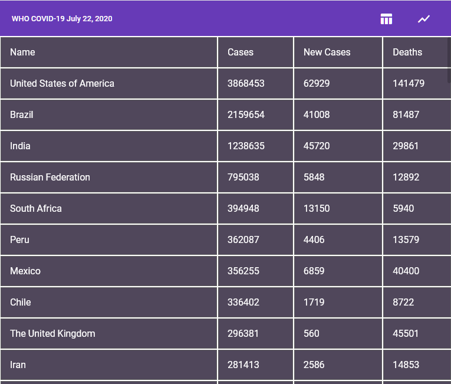
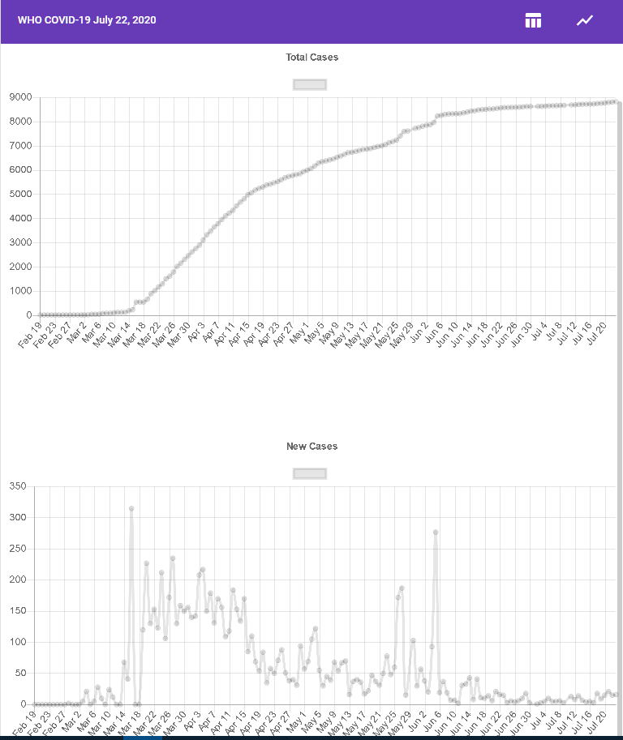

<mat-dialog-content>
    <mat-card>
        <mat-card-title>Covid-19 WHO Angular visualizer</mat-card-title>
        <mat-card-content>A quick hackathon project to display the latest Covid-19 data from WHO using a simple tabular
            format
            and ChartsJS graphs. I initially deployed this using Docker on Heroku but I soon used Vercel instead. Vercel
            seems way more appropriate for static websites.
            <div class='div-image-container'>
                
                
            </div>
            <p>The data is obtained from a 3rd party NodeJS server written by my <a href='https://andrewzh.com/'
                    target='_blank'>son</a></p>
        </mat-card-content>
    </mat-card>
</mat-dialog-content>